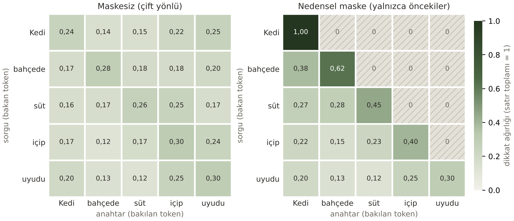

Abdülbaki Bayır
24290050
YZM327 1. HAFTA ÖDEVİ
Agora'da her üye konu açar. Konu 24 saat tartışılır; bu sürede her katılımcı bir fikir yazabilir. Ardından en fazla beş turluk fikir oylaması başlar: her turda eşiğin altında kalan fikirler elenir (%5, %5, %10, %20), %75'i bulan ya da tek başına kalan fikir hemen kabul edilir, beşinci turda en çok oyu alan kazanır. Bir fikrin oranı, ağırlıklı oy payı ile kişi payının küçüğüdür (çift çoğunluk); çekimserler paydada sayılır. Mesajlar silinmez; gizleme ve konu kaldırma 3/4 oylamayla olur. Her olay üç düğümlü bir kayıt defterine yazılır; kurcalama tespit edilip onarılır, oy veren makbuz koduyla oyunun doğru yazıldığını doğrular.
| Gereksinim | Karşılığı |
|---|---|
| Konu açma, düzenleme, silme; alt konu | Hemen açılır; tartışmada düzenlenir (eski hâli görünür); kaldırma 3/4 oylamayla; alt konu kuralı yalnızca daraltır |
| Çoğunluk kararı, sonunda uzlaşma | 5 tur eleme, %75 ezici üstünlük, "tek kalan", yeter sayı; tek fikir karar olur, katılmayan itiraz konusu açar |
| Kayıt bilgileri katılım kuralı | Konum ağacı (il › ilçe) ve yaş kuralı; sağlamayan gözlemci olur (okur, oy veremez); görünen yalnızca takma ad |
| Herkes eşit, bazıları daha eşit | Uzmanlık ön şart + kontenjan + alanın oylamasıyla; uzman oyu 10 sayılır ama çift oranla dengelenir |
| Ontolojiyle ölçüm, yönetmelik denetimi | D1–D7: kişisel veri engellenir; hakaret, kategori, konum, benzer konu, alt konu, açıklık için uyarılır; ciddiyet oylanır |
| Silinmeyen tartışma; oy devri; azınlık | Düzenleme geçmişi, gizleme oylaması; tavanlı oy devri (genel/kategori/konu); itiraz, korunan maddeler 3/4, gizli oy |
| YZ üye; kişiler grafta; dağıtık defter | YZ üye özet yazar, oy vermez; üye ağı, PageRank, Gini; hash zinciri, 3 düğüm, uzlaşma, onarım |
| Uygulama + web sitesi | Sunucu sürümü, sunucusuz tarayıcı sürümü (GitHub Pages), PWA, Expo Go ve Android uygulaması, REST API |
| Ders: çerçeveleme; SOLID/GoF; S02 laboratuvar | Bölüm 4 (docs/analiz.md), Bölüm 3 (docs/tasarim.md 8), Bölüm 7 (laboratuvar/) |
BEGIN IMMEDIATE ile sıraya girer. Oy yalnızca tur hâlâ açıksa yazılır (koşullu INSERT). Kişi başı tek fikir kısmi tekil indeksle korunur (8 iş parçacıklı test).Özet, oy vermeden önce okunur; bir dil modelinin uydurabileceği tek bir sayı (halüsinasyon, S02-43) kararı etkiler. Mesajı dış servise göndermek kişisel veriyi dışarı çıkarır; her çağrı ücretli ve yavaştır (S01-34, 35), Türkçe aynı anlamı 1,4–1,7 kat daha çok tokenla taşır (Bölüm 7). Bu yüzden özetteki her sayı veritabanından gelir; oranlar yuvarlanmaz, kesilir (%74,9 asla "%75" olmaz) ve aynı veri hep aynı özeti verir (testli).
Desenler yalnızca kodda somut bir sorunu çözdükleri yerde kullanıldı (TD-3: "desen amaç değil araçtır"; TD-57: YAGNI/KISS). Her GoF
deseninin davranışı testle korunur; sınıf diyagramları ve sınırları docs/tasarim.md 8. bölümdedir.
| İlke (TD-9…12) | Önce (ihlal) | Şimdi |
|---|---|---|
| S Tek sorumluluk | 150 satırlık web.kur() kimlik, CSRF, zamanlayıcı, hata sayfaları ve filtreleri birlikte yapıyordu; denetim yönetmelik modülüne gömülüydü | istek.py, hata_sayfalari.py, sablon.py, denetim.py, gorunum.py, metin.py |
| O Açık/kapalı | Yeni oylama türü 5 dosyada if tip == … dalı demekti | Yeni tür = yeni sınıf + @kaydet; yeni denetim maddesi = yeni halka; yeni kanal = yeni adaptör |
| L Liskov | Kapalı bildirim kanalı abone kabul edip her gönderimde hata veriyordu | Bütün türler şablon yöntemde aynı kullanılır; SQLite ve bellek depoları aynı sonucu verir (testli) |
| I Arayüz ayrımı | — | Küçük arayüzler: AnlikKanal 3, DenetimKurali 1, DugumDeposu 5 soyut yöntem. İstisna: TeklifTuru 18 yöntem (4 soyut), bilerek bölünmedi |
| D Bağımlılığın tersine çevrilmesi | Veritabanı (altyapı) defteri (üst katman) içe aktarıyordu; şifre yöntemi ve saat sabitti | Commit aboneliği (Observer); iş modülleri bağlantıyı parametre alır; şifre yöntemi, saat ve kanallar testte değiştirilebilir (test dikişi) |
| GoF deseni | Çözdüğü sorun | Agora'daki karşılığı |
|---|---|---|
| State (TD-43) | durum == … kontrolleri dağınıktı; unutulan biri kaldırılmış konunun geçmişini okunur bırakıyordu | konu_durumlari.py: 5 durum sınıfı, izinler ve geçiş tablosu; geçişi yapan üç işlem tabloya danışır. Fark (TD-48): geçişi durum nesnesi değil, konular.py yapar |
| Strategy + Template Method (TD-36, 41) | Altı oylama türünün sonuç kuralları if/elif zincirindeydi | teklif_turleri.py: 6 strateji, @kaydet kaydı; oylama.sonuclandir iskeleti: sayım → durum → tamamla → bildir → uygula |
| Chain of Responsibility (TD-44) | D1–D7 tek 77 satırlık fonksiyondaydı, mesaj denetimi bunları yeniden yazıyordu | denetim.py: her madde bir halka; web'de istek öncesi zincir |
| Adapter (TD-24) | Web Push ve Firebase farklı arayüzler, çağıran iki dalı da biliyordu | anlik.py: AnlikKanal ← WebPushKanali, FcmKanali (testte sahte kanal) |
| Memento (TD-47) | Bir konunun hatası zamanlayıcının bütün işini geri alıyordu | kayit_noktasi() (SAVEPOINT) + KuyrukHatirasi: bağlantının kuyrukları hatıradan geri yüklenir |
| Observer (TD-38) | Altyapı katmanı üst katmanı çağırıyordu | veritabani.commit_aboneligi; defter abone |
| Repository (TD-51) | Düğüm dosyası erişimi uzlaşma mantığına gömülüydü; test için disk gerekiyordu | Yalnızca defter düğümleri: DugumDeposu ← SqliteDugumDeposu, BellekDugumDeposu. Forum verisi doğrudan SQLite'ta |
| Facade (TD-28) | Konu sayfası rotası alt sistemleri tek tek çağırıyor, iş kuralı içeriyordu | gorunum.konu_sayfasi() 7 alt sistemi toplar; kural saf işlev |
GoF sayılmayan, Python'un hafif karşılıkları (TD-26: @decorator fonksiyon, GoF Decorator nesne sarmalar):
kayıt (@kaydet), fabrika işlevi (tur(kod)), @giris_gerekli, commit sonrası iş kuyruğu, test dikişleri
(şifre yöntemi, saat, kanal: test süresi ~60 sn'den ~12 sn'ye).
Giderilen anti-desenler (TD-57): God function (web.kur, yonetmelik.denetle),
uzun durum zincirleri, kopya kod (güvenli yönlendirme kontrolünün beş kopyasından biri açık yönlendirme açığı içeriyordu), ölü kod,
modül düzeyinde içe aktarma döngüsü (oy_kurallari.py ile kırıldı, testli), doğrulanmamış yapılandırma. Gizli global
durum azaltıldı; kalanlar belgelendi.
Bilerek kullanılmayanlar: Singleton (Python modülü zaten tekildir), Builder, Abstract Factory,
Visitor, Mediator (çözecekleri bir sorun yok). Tartışma soruları (TD-59): Python, Iterator, Command, Observer ve
Factory'yi fonksiyon, kapanış ve sözlükle hafifletir. Flask'ta: before_request zinciri (CoR), @route kaydı
(Registry), Flask nesnesi (Facade), request/g (Proxy).
Ödev slaytının (TD-59) maddeleri bir ML servisi içindir; Agora'da en yakın karşılıkları: yapılandırmadan seçim → oylama
türleri; Pipeline → denetim zinciri (ölçüm betiği üretimdeki aynı kodu çağırır); Repository → defter düğümleri; Observer → commit aboneliği;
Facade → konu sayfası; sahte depoyla birim testi → BellekDugumDeposu, SahteKanal.
"Bir forum yapın" isteğinin arkasındaki altı dertten üçü YZ ile ilgili değil (söz eşitsizliği, süresiz tartışma, sayıma güvensizlik): bunlar süreç ve kriptografiyle çözüldü. Üçü YZ adayı: uzun tartışmanın özeti, içerik denetimi, tekrar eden konu. Kararı model değil, insanlar verir. Her bileşen H2-9'daki karar ağacından geçirildi:
| Bileşen | Görev türü | "YZ gerekli mi?" sonucu |
|---|---|---|
| Sayım ve eleme | ML değil | Kural yazın: kural yönetmelikte; açıklama yasal/etik zorunluluk ("harf notu" örneği, H2-12) |
| D1 hakaret | İkili sınıflandırma | Etiketli veri yok → önce veri toplayın; bugün kural. Gizleme oylamaları ve şikayetler etiket olarak birikir |
| D2 kişisel veri | İkili sınıflandırma | Kural yazın: biçimler belli (telefon, e-posta, T.C. kimlik sağlaması, IBAN); serbest adres ileride NER adayı |
| D3 kategori önerisi | 7 sınıflı sınıflandırma | Hata ucuz (yalnızca uyarı) → kural (ontoloji) |
| YZ özeti | Üretim | Sayılar: kural. İçerik: yalnızca insan onaylı dil modeli (yapılandırılmış çıktı, sayı sadakati denetimi; S01-32 "emekle") |
Tek cümlelik problem tanımı (H2-50: kullanıcı, karar, görev, metrik, temel çizgi). Forumda konu ya da mesaj yazan üye, metninin bir kişiyi aşağılayıp aşağılamadığını (D1) ve kişisel veri içerip içermediğini (D2) göndermeden önce görüp düzeltsin diye her metin ikili sınıflandırılır; başarı, kurallar dondurulduktan sonra yazılmış görülmemiş bir kümede D1 kesinliği ve F1'inin ≥ 0,80, D2 duyarlılığının ≥ 0,80 olmasıdır; temel çizgiler "hep temiz" (F1 = 0) ve rastgele tahmindir (F1 ≈ 0,50); bir model bugünkü kuralı aynı türden bir kümede en az +0,10 F1 geçmedikçe onun yerine geçmez.
| Kanvas kutusu (H2-48) | Agora |
|---|---|
| 1. İş hedefi ve değer | Topluluk kararlarının adil, şeffaf ve en geç 7 günde alınması; iş metriği: karara bağlanma oranı |
| 2. Karar ve eylem | Kararı üyeler oyla verir; sistem kararı hazırlar: denetim yazana anında geri bildirim verir, özet tur sonunda yazılır |
| 3. ML görevi | Çekirdekte yok. Destek: D1/D2 ikili, D3 7 sınıflı sınıflandırma, D5 benzerlik, özet = üretim |
| 4. Veri | Etiketli forum verisi yok. Ölçüm için 166 örnek (geliştirme 85, test 43, görülmemiş son küme 38); örnekleri kuralları geliştiren YZ asistanı yazdı |
| 5. Metrikler | Model: D1 kesinlik (F0,5), D2 duyarlılık (F2), D3 makro F1. Ürün: katılım, karara kadar süre. Koruyucu: oy gücü Gini, defter tutarsızlığı = 0, YZ sayı sadakati %100, p95 gecikme |
| 6. Temel çizgi | Çoğunluk sınıfı (F1 0), rastgele (F1 ≈ 0,50), bugünkü kural (aşağıda); insan (gizleme oylaması) ölçülmedi |
| 7. Kısıtlar | Sunucu bütçesi, GPU ve dış API yok; sunucuda p95 < 200 ms; KVKK; gizli oy; açıklanabilirlik |
| 8. Riskler ve başarı | Ön-otopsi (H2-47, olasılık × etki sıralı): en büyük risk katılımsızlık (9); sonra oy devriyle güç toplama, sahte hesap, defterin büyümesi (bulundu, düzeltildi). Yayın ölçütü önceden yazıldı (H2-43) |
Metrikler (H2-25, H2-35). İş: karara bağlanma ve itiraz oranı; ürün: karara kadar süre, katılım, fikir başına yanıt
(olcum/urun_metrikleri.py). Goodhart'a karşı trend puanında kişi başı en çok 3 mesaj sayılır. Model → ürün → iş
(S01-20): D1 kesinliği düşerse meşru mesajlar durur, katılım ve karara bağlanma düşer.
Kurallar "aptal" temel çizgilerle aynı örneklerde ölçüldü (rastgele = 1000 tohumun ortalaması); hata analizinden dil kuralına dayanan düzeltmeler çıktı ("ahmak → ahmağın", IBAN). Kurallar dondurulduktan sonra yazılıp ölçülmeden önce commit edilen son küme, önceki sonuçların iyimser olduğunu gösterdi:
| Madde · öncelikli metrik | n (VAR) | Çoğunluk | Rastgele | Kural · test | Kural · son küme | DP/YP/YN/DN | Yayın ölçütü |
|---|---|---|---|---|---|---|---|
| D1 hakaret · kesinlik / F1 | 13 (7) | 0 / 0 | 0,53 / 0,50 | 0,83 / 0,83 | 0,71 / 0,71 | 5/2/2/4 | sağlanmadı |
| D2 kişisel veri · duyarlılık | 11 (6) | 0 | 0,49 | 0,80 | 0,83 | 5/0/1/5 | sağlandı |
| D3 kategori · makro F1 | 14 (7×2) | 0,04 | 0,13 | 0,87 | 0,49 | aşağıda | sağlanmadı |
| D3: gerçek ↓ tahmin → | Bil | Eko | Eğt | Kül | Sağ | Siy | Tek | yok | F1 |
|---|---|---|---|---|---|---|---|---|---|
| Bilim | · | · | 1 | · | · | · | · | 1 | 0,00 |
| Ekonomi | · | 1 | 1 | · | · | · | · | · | 0,67 |
| Eğitim | · | · | 2 | · | · | · | · | · | 0,44 |
| Kültür ve Sanat | · | · | 1 | 1 | · | · | · | · | 0,67 |
| Sağlık | · | · | 1 | · | 1 | · | · | · | 0,67 |
| Siyaset | · | · | · | · | · | 2 | · | · | 1,00 |
| Teknoloji | 1 | · | 1 | · | · | · | · | · | 0,00 |
Son küme, karışıklık matrisi. Eğitim sütunu 7 hatanın 5'ini topluyor: "kampüs", "yurt", "laboratuvar" gibi her konuda geçen kelimeler metni Eğitim'e çekiyor.
| Hata örneği (son küme) | Neden |
|---|---|
| "Aptal telefonlar dönemine dönmek ister misiniz?" D1: YOK → engel | Kelime kişiyi değil nesneyi niteliyor; liste bağlamı bilmiyor |
| "Kafana taş mı düştü?" D1: VAR → kaçtı | Deyimsel hakaret, listede kelime yok |
| "Moda Caddesi No 15 Daire 7…" D2: VAR → kaçtı | Serbest biçimli adres |
| "Yurtlarda grip aşısı kampanyası" D3: Sağlık → Eğitim | Yalnızca "yurt" eşleşti; "grip", "aşı" kavram listesinde yok |
Karar (ölçüt önceden yazılmıştı, H2-43; hedef kaydırılmadı). D2 sağladı ve engellemeye devam eder. D1'in yanlış engel oranı %29: yanlış engel 5, kaçak 1 birim sayılırsa (H2-31) engelleyen kural 12, "hep temiz" 7 birim tutar. Bu yüzden D1'in varsayılanı "Uyarır" yapıldı: metin yayımlanır, yazana uyarı gösterilir, kaçanı topluluk gizler (S01-32 "emekle"); topluluk isterse oylamayla "Engeller"e çeker (H2-29). D3 zaten yalnızca uyarır. Sonraki adım veri toplamaktır; bir model kuralı yeni ve görülmemiş bir kümede +0,10 F1 farkla geçmedikçe yerine geçmez. Not: örnekleri ve kuralları aynı YZ asistanı yazdığı için sayılar iyimser olabilir.
python -m unittest discover testler, pytest ya da uv run pytest. GitHub Actions her gönderimde testleri, statik denetimi (pyflakes) ve ölçümü çalıştırır.| Sunucu tarafı gecikme (ms) | önce | şimdi |
|---|---|---|
| Oy verme, demo verisi (p95) | 18,6 | 10,1 |
| Oy verme, defterde +50.000 blok (p95) | 645,2 | 9,5 |
| Kayıt defteri sayfası, +50.000 blok (p95) | 1.145,5 | 11,7 |
| Konu akışı, 1.019 konu (p50) | 77 | 48,7 |
Hedef p95 < 200 ms. "Önce": her yazmada üç zincirin baştan doğrulanması (O(n)); düzeltme: düğüm sürümüne bağlı doğrulama önbelleği. Önceki ölçümler o günkü p95 formülüyle alındı (bir sıra yukarıdan okuyordu); büyüklük sırası değişmez. Komut: python olcum/gecikme_olcumu.py.
python calistir.py (Windows'ta baslat.bat); demo verisi ve sunum kipi (--demo) ile.
Sınırlar: D1 ve D3 kural tabanlı temel çizgidir. Kişinin gerçek kimliği teyit edilmez (sahte hesaba karşı yalnızca hız
sınırı); yedek şifrelenmez; SQLite saniyede ~100 yazmayla sınırlıdır; tarayıcı sürümü kişisel bir demodur. Bu yüzden ders demosu "yayın"
değil, prototiptir (docs/analiz.md 11).
YZ kullanım beyanı (S01-46, 47; H2-59). Forumun ilk sürümü öğrencinin commit'idir (1 Ekim 2026). Sonraki bütün commit'lerde Claude Code (Anthropic) kodlama ajanı kullanıldı: belgeler, SOLID/GoF düzenlemeleri, hata düzeltmeleri ve testleri, ölçüm betikleri ve örnekleri, tarayıcı sürümü, mini laboratuvar, bu rapor. Öğrencinin rolü: ürün fikri ve ilk sürüm, hedef ve ders kaynakları, kapsam kararları, gözden geçirme ve teslim. Testleri de YZ yazdığı için düzeltme testlerinin eski kodda kırmızı olduğu ayrıca denetlendi; ölçütler sonuçlardan önce yazıldı. Ayrıntı: README.
Kaynaklar: ders sunumları (S01, S02, H2, TD); Huyen, Designing Machine Learning Systems (2022) ve AI Engineering (2025); Gamma vd., Design Patterns (1994).